Локальный ИИ
Модели для текста, транскрибации, синтеза речи и работы с документами на вашем сервере.

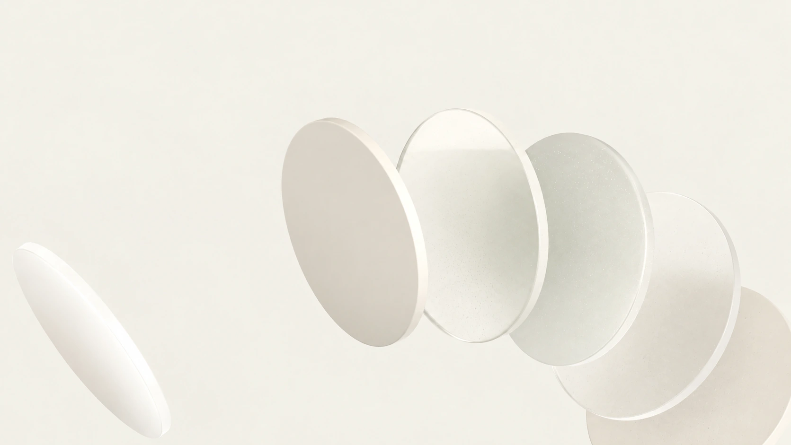
Ваши сервисы на вашем сервере
Подберём решения, настроим инфраструктуру и передадим всё вашей команде
ПодробнееНайдено сервисов: 17 из 17
Модели для текста, транскрибации, синтеза речи и работы с документами на вашем сервере.
Почта на вашем домене с веб-интерфейсом и защитой от спама без платы за ящики.
Общие папки, файлы и календари с доступом с компьютера и телефона.
Документы, таблицы и презентации с совместным редактированием в браузере.
Видеовстречи на собственном домене с настройками доступа для команды.
Задачи, проекты и совместная работа в одном пространстве вашей команды.
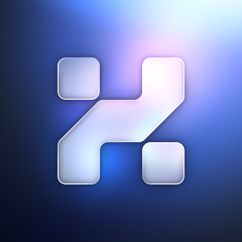
Контакты, сделки и обращения клиентов в CRM под контролем вашей компании.
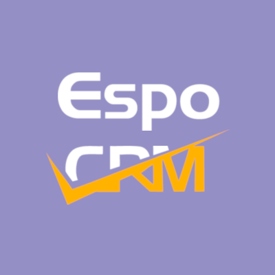
Инструкции, регламенты и знания компании с поиском и управлением доступом.
Закупки, склад, продажи и бизнес-процессы в единой открытой системе.
Обсуждения по темам, история переписки и интеграции на вашем сервере.
Общее хранилище паролей с разграничением доступа и двухфакторной защитой.
Планы, сроки, задачи и диаграммы Ганта для всей команды.
Чат на сайте и общий ящик обращений для команды поддержки.
Связи между сервисами и автоматические действия без ручной рутины.
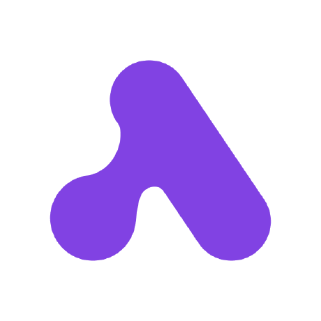
Посещения, источники трафика и цели с хранением данных у вас.

Сегменты аудитории, email-кампании и сценарии коммуникации.
Интерфейсы, прототипы и дизайн-компоненты в общем пространстве.
Ничего не нашли. Попробуйте другое название или категорию.
Сервисы работают на вашем сервере. Файлы, переписка и клиентская база остаются у вас, без зависимости от облачных платформ. Настроим права доступа, защищённые соединения и резервные копии.
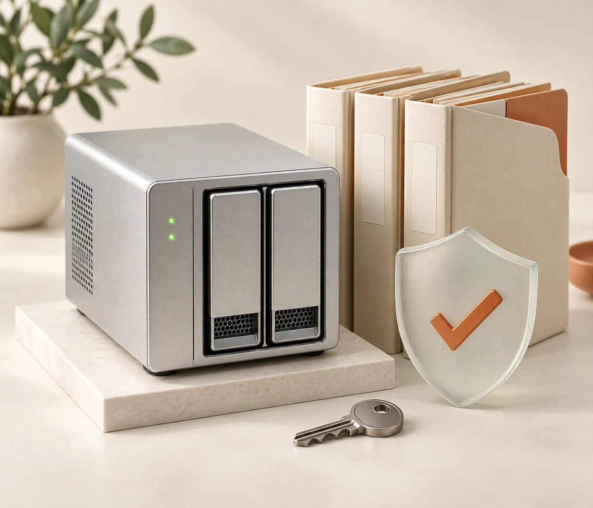
Установим бесплатное открытое ПО и настроим под вас. Добавляйте пользователей без оплаты за каждое рабочее место в выбранной бесплатной редакции. Вы оплачиваете внедрение и инфраструктуру.
Свяжемся с вами, разберём задачи и текущие подписки. Предложим открытые аналоги и соберём подходящий набор сервисов. Согласуем нужные функции, настройку и перенос данных.
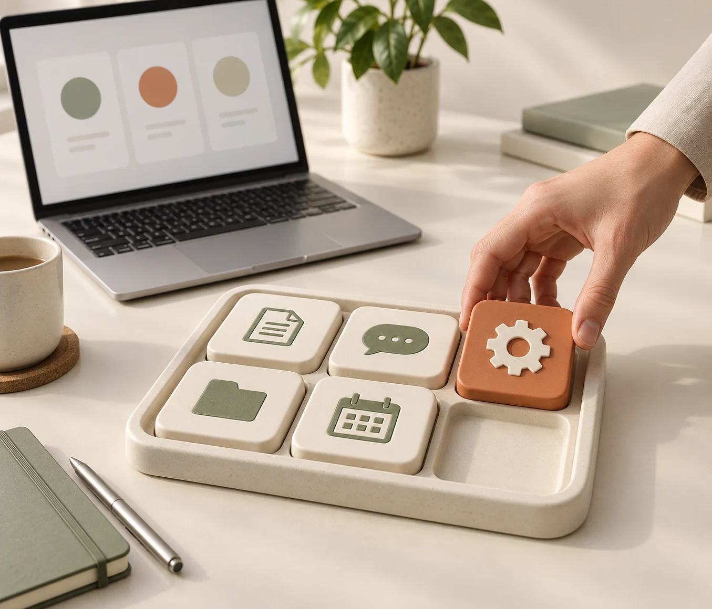
Любой один сервис на выбор. Заменим подписку и настроим всё под ваши задачи.
Любое количество сервисов. Соберём и настроим набор для работы вашей компании.
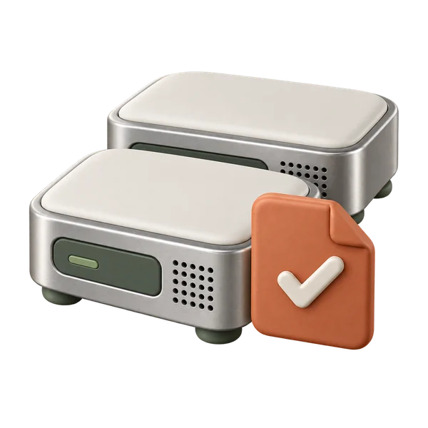
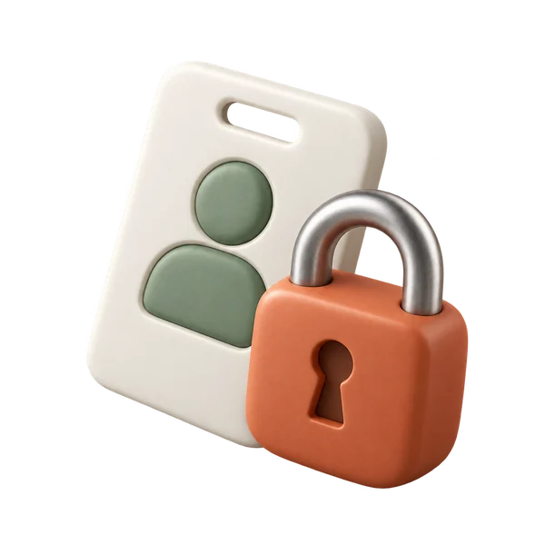
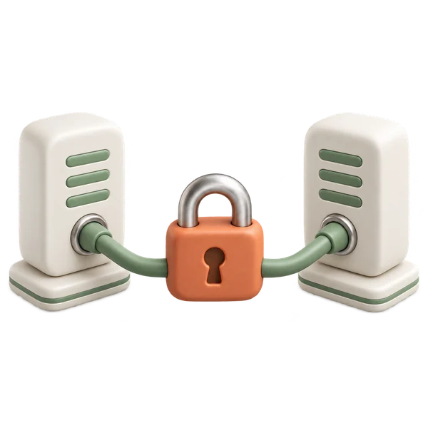
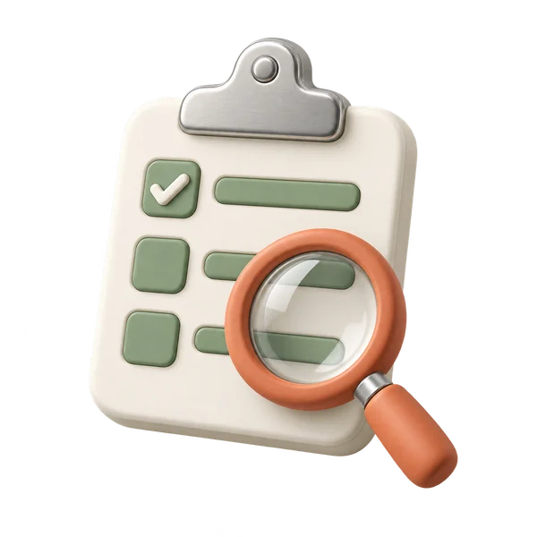
Почта, CRM, файлы и проекты на вашем сервере. Подберём сервисы, настроим работу команды и перенесём ваши данные.
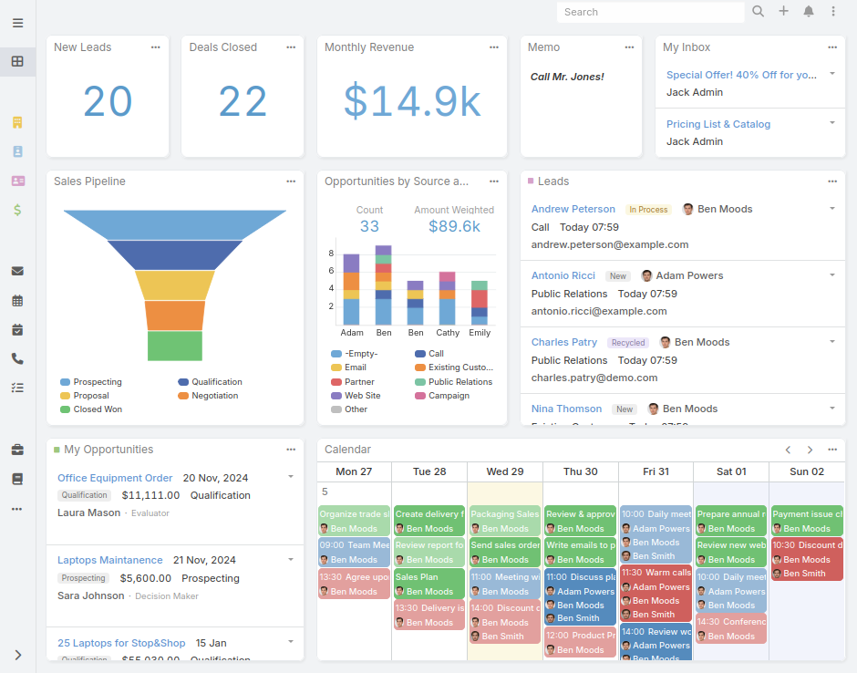
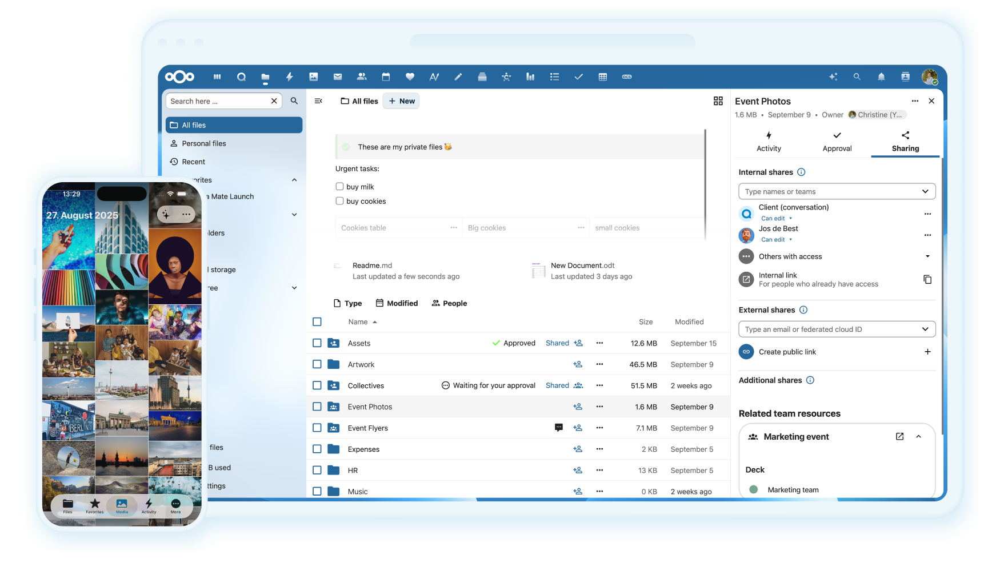
Развернём модели для текста, речи и работы с документами в вашей инфраструктуре.
Развернём локальную языковую модель для текстов, обращений и рабочих задач. Подберём оборудование, проверим качество и настроим доступ для вашей команды.
Настроим распознавание речи на вашем сервере: записи встреч, интервью и звонков в текст. Проверим качество русского языка и скорость на ваших аудиозаписях.
Развернём локальную озвучку текстов для инструкций, уведомлений и учебных материалов. Подберём голос, проверим произношение и настроим выпуск аудиофайлов.
Настроим ИИ-помощника по документам компании: поиск ответов в инструкциях, регламентах и базе знаний. Источники и доступ сотрудников остаются под вашим контролем.
Мы помогаем заменить платные облачные подписки бесплатными открытыми сервисами в вашей инфраструктуре. Подбираем ПО, устанавливаем, настраиваем под ваши процессы и переносим согласованные данные. Поддержка каждого установленного сервиса на год входит во внедрение.
Бесплатны открытые редакции программ из каталога. Внедрение одного сервиса стоит 9 900 ₽, всего набора 49 900 ₽ разово. Состав настройки и переноса данных согласуем до начала работ. Первый год поддержки каждого сервиса включён. Сервер, домен и внешние платные услуги оплачиваются отдельно.
Сначала сверяем ваши задачи и функции. Затем выбираем решения и сервер, согласуем смету, настраиваем и тестируем систему. После переноса данных передаём доступы, инструкцию и план обслуживания.
Да, объём и способ миграции согласуем до внедрения. Проверим доступность экспорта, форматы, вложения и интеграции. Начнём с пробного переноса и согласуем момент переключения.
При подписках на 10 000 ₽ в месяц вы тратите 120 000 ₽ за год. Внедрение всего набора за 49 900 ₽ на вашем сервере даёт экономию 70 100 ₽ в первый год. Если нужен VDS с резервными копиями за 3 000 ₽ в месяц, экономия составит 34 100 ₽. Один сервис стоит 9 900 ₽. Измените расходы в калькуляторе, чтобы увидеть свой результат.
Не обязательно. Можно использовать ваш сервер в офисе или арендованный сервер у выбранного провайдера. Подберём конфигурацию по нагрузке, хранению данных и требованиям доступности.
Почту, файлы, календари, документы, задачи, базу знаний, CRM, ERP, чат, видеовстречи, хранилище паролей, аналитику, рассылки, автоматизацию и инструменты дизайна. Соберите набор в каталоге или расскажите о своей задаче, подберём подходящее открытое ПО.
Возможности отличаются. До начала работ сопоставим ваши обязательные функции, интеграции и объём данных с выбранным продуктом. Платные расширения и ограничения бесплатных редакций укажем в смете.
Доступы администратора получает ваша компания. На этапе внедрения доступ выдаётся специалистам в согласованном объёме; после передачи его можно отозвать. Права сотрудников, двухфакторную защиту и резервные копии настраиваем по согласованному плану.
Свой сервер даёт контроль над размещением данных и настройками, но не исключает риски. Защита требует обновлений, резервного копирования, контроля доступа и проверок восстановления. Эти меры согласуем при внедрении.
В обоих форматах внедрения включён год поддержки каждого установленного сервиса. После этого продолжение поддержки можно согласовать отдельно. Доступы и данные остаются у вас, а бесплатное ПО продолжает работать без подписки IT Global.
Да. Новые сервисы можно внедрять поэтапно, каждый с годом поддержки после запуска. Пользователей добавляете без платы за место в выбранной бесплатной редакции, с учётом ресурсов сервера и условий конкретного продукта.
Работающие сервисы в согласованной конфигурации, административные доступы, инструкции и описание резервного копирования. Состав, условия приёмки и период устранения замечаний фиксируем до начала работ.
Выберите нужные сервисы и заполните краткую заявку. В заявке будут ваши требования и предварительный расчёт. Отправим её команде IT Global, чтобы связаться с вами. Точную смету составим после проверки задач и инфраструктуры.